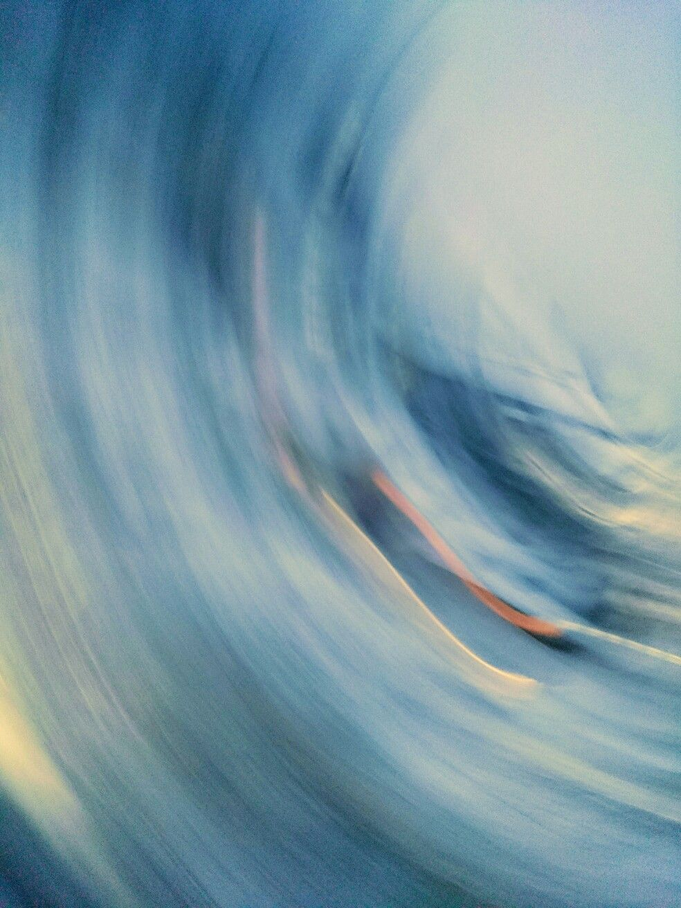

Technique
5 août · 6 min
EQ de correction vs EQ de mixage : pas le même métier
Trois bandes pour enchaîner des morceaux, trente et une pour redresser une salle. Pourquoi confondre les deux te coûte ton mix.
Blog
Calage sono, acoustique des salles, matériel — et le journal de bord de la bêta, sans filtre.

Modes de salle, murs réfléchissants, sub posé dans un coin : ce qui se passe vraiment entre ton enceinte et les oreilles du public — et pourquoi aucun réglage universel n'existe.
Lire l'article →Trois bandes pour enchaîner des morceaux, trente et une pour redresser une salle. Pourquoi confondre les deux te coûte ton mix.
La checklist qu'on utilise en vrai : morceau de référence, tour de salle, correction des basses d'abord, aigus ensuite.
Comment on est passés sous les 5 ms de latence ajoutée sans toucher au monitoring casque. Spoiler : ça n'a pas été simple.
+6 dB de basses gratuites, mais pas partout et pas proprement. Mesures à l'appui, et comment corriger le résultat.
Le banc d'essai de la bêta : ce que ce combo encaisse, où il s'écroule, et ce que la correction en tire.
Plongée dans le routage audio des logiciels DJ sur macOS, et pourquoi il faut s'insérer ailleurs dans la chaîne.